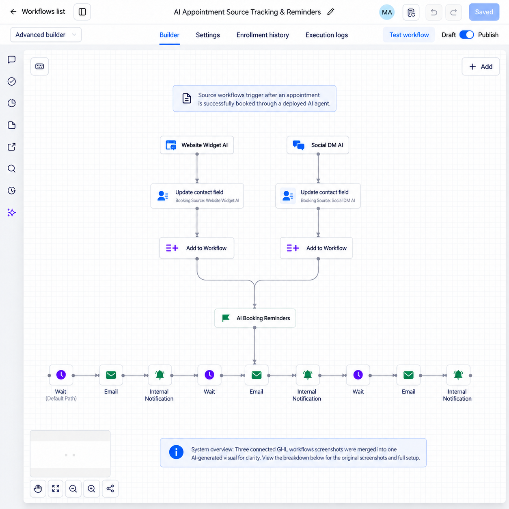

AI Appointment Source Tracking & Reminders
Records whether an appointment came from the website AI widget or social messaging, then sends both sources into one reminder sequence. This keeps booking attribution clear and follow-up consistent.
Overview combines three workflow screenshots into one AI-generated visual.